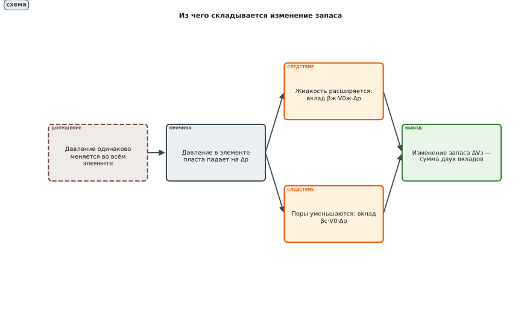

«Под упругим запасом жидкости в пласте понимают количество жидкости, которое можно извлечь из пласта при снижении давления в нем за счет объемной упругости твердого скелета пласта и насыщающих его жидкостей.»
Большой объем пласта может сделать упругий запас существенным, хотя коэффициенты деформации малы.
«Хотя коэффициенты объемной упругой деформации жидкости и твердого скелета пласта очень малы (см. гл. XIX), очень велики объемы пласта, поэтому упругий запас жидкости в пласте может быть весьма существенным.»
«Выделим мысленно элемент объема пласта $V_0$. Пусть $V_{0\text{ж}}$ есть объем жидкости, насыщающей этот элемент объема пласта $V_0$ при начальном давлении $p_0$.»
Объем жидкости для подсчета запаса измеряют при начальном пластовом давлении.
«Обозначим через $\Delta V_\text{з}$ изменение упругого запаса жидкости внутри объема пласта $V_0$ при изменении давления во всех его точках на величину $\Delta p$.»
Для подсчета автор переходит от дифференциалов к конечным разностям объемов и давления.
«При определении формулы для коэффициента объемного сжатия жидкости $\beta_{\text{ж}}$ считалось, что на жидкость действует только сжимающее гидростатическое давление,»
При гидростатическом воздействии объем жидкости уменьшается при росте давления и увеличивается при падении: отсюда минус в формуле.
«поэтому при увеличении давления (сжатие) объем жидкости уменьшается и, наоборот, при уменьшении давления объем возрастает. В результате перед коэффициентом $\beta_{\text{ж}}$ стоит знак «минус».»
При падении пластового давления поры уменьшаются, и скелет сжимает жидкость в порах.
«В случае упругого режима при падении давления в пласте объем жидкости уменьшается. Такое поведение жидкости обусловливается тем, что рассматривается жидкость в порах и, как следует из формулы для $\beta_{\text{с}}$, при уменьшении давления объем пор уменьшается, а жидкость испытывает сжимающее воздействие со стороны твердого скелета.»
В подсчете изменения запаса автор опускает минус перед коэффициентом жидкости и складывает два вклада.
«Поэтому знак минус перед $\beta_{\text{ж}}$ опускается. Полагая, что изменение упругого запаса складывается из $\Delta V_{\text{ж}}$ и $\Delta V_{\text{п}}$ получаем:»
Как это работает
Определение
Упругий запас — жидкость, которую извлекают при снижении давления. Её выдавливает упругость жидкости и породы. стр. 475
«Под упругим запасом жидкости в пласте понимают количество жидкости, которое можно извлечь из пласта при снижении давления в нем за счет объемной упругости твердого скелета пласта и насыщающих его жидкостей.»
Коэффициенты деформации малы. Но по выводу автора, большой объём пласта делает упругий запас существенным. стр. 475
«Хотя коэффициенты объемной упругой деформации жидкости и твердого скелета пласта очень малы (см. гл. XIX), очень велики объемы пласта, поэтому упругий запас жидкости в пласте может быть весьма существенным.»
Запас меняется вместе с давлением. При снижении давления он убывает. При повышении — накапливается. стр. 475
«При снижении давления в пласте упругий запас жидкости естественно убывает,»
«а при повышении давления происходит накопление упругого запаса жидкости в нем.»
Как ставят расчёт
Выделяют элемент пласта. Определяют исходный объём насыщающей его жидкости при начальном давлении. стр. 475
«Выделим мысленно элемент объема пласта $V_0$. Пусть $V_{0\text{ж}}$ есть объем жидкости, насыщающей этот элемент объема пласта $V_0$ при начальном давлении $p_0$.»
Объём жидкости для подсчёта берут именно при начальном пластовом давлении. Это точка отсчёта. стр. 475
«Упругий запас жидкости будем определять по ее объему, замеряемому при начальном пластовом давлении.»
Допускают, что давление меняется одинаково во всех точках элемента. Так расчёт становится простым. стр. 475
«Обозначим через $\Delta V_\text{з}$ изменение упругого запаса жидкости внутри объема пласта $V_0$ при изменении давления во всех его точках на величину $\Delta p$.»

Падение давления даёт два вклада в упругий запас — от жидкости и от пор. Их складывают.
Класс B · схема · нарисовано кодом · стр. 475–476
Дальше автор переходит от дифференциалов к конечным разностям — разностям величин до и после изменения. стр. 475
«заменив дифференциалы давления и объемов пор и жидкости на конечные разности,»
Откуда минус и почему его убирают
Формула объёмного сжатия жидкости сначала относится к одному случаю. На жидкость действует только сжимающее гидростатическое давление — давление со всех сторон. стр. 476
«При определении формулы для коэффициента объемного сжатия жидкости $\beta_{\text{ж}}$ считалось, что на жидкость действует только сжимающее гидростатическое давление,»
В этом случае объём жидкости уменьшается при росте давления и растёт при падении. Отсюда минус в формуле. стр. 476
«поэтому при увеличении давления (сжатие) объем жидкости уменьшается и, наоборот, при уменьшении давления объем возрастает. В результате перед коэффициентом $\beta_{\text{ж}}$ стоит знак «минус».»
В пласте иначе. При падении пластового давления поры уменьшаются. Твёрдый скелет породы сжимает жидкость в порах. стр. 476
«В случае упругого режима при падении давления в пласте объем жидкости уменьшается. Такое поведение жидкости обусловливается тем, что рассматривается жидкость в порах и, как следует из формулы для $\beta_{\text{с}}$, при уменьшении давления объем пор уменьшается, а жидкость испытывает сжимающее воздействие со стороны твердого скелета.»
Поэтому в подсчёте изменения запаса автор опускает минус перед коэффициентом жидкости. Два вклада складывают: жидкость и поры. стр. 476
«Поэтому знак минус перед $\beta_{\text{ж}}$ опускается. Полагая, что изменение упругого запаса складывается из $\Delta V_{\text{ж}}$ и $\Delta V_{\text{п}}$ получаем:»
По шагам
Как подсчитать изменение упругого запаса
Выделите элемент пласта и зафиксируйте начальное давление. стр. 475
Задайте одинаковое изменение давления во всех точках элемента. стр. 475
Перейдите к конечным разностям и сложите вклады жидкости и пор. стр. 475–476
Формулы по книге
$$- \beta_{\text{ж}} V_{0\text{ж}} \Delta p = \Delta V_{\text{ж}} \quad \text{и} \quad \beta_{\text{с}} V_0 \Delta p = \Delta V_{\text{п}}$$
Исходные конечные разности объема жидкости и пор до перехода к балансу упругого запаса. стр. 476
Обозначения
Обозначение
Что это
Единицы
$\beta_{\text{ж}}$
коэффициент объемного сжатия жидкости
Па⁻¹
$V_{0\text{ж}}$
начальный объем жидкости
м³
$\Delta\!p$
изменение давления; в модели истощения — снижение от начального до среднего
Расставьте шаги подсчёта изменения упругого запаса.
Перетащите пункты (мышью или пальцем за ⠿) или двигайте кнопками ↑ ↓.
⠿Перейдите к конечным разностям и сложите вклады жидкости и пор.
⠿Задайте одинаковое изменение давления во всех точках элемента.
⠿Выделите элемент пласта и зафиксируйте начальное давление.
Верный ответ: Выделите элемент пласта и зафиксируйте начальное давление. → Задайте одинаковое изменение давления во всех точках элемента. → Перейдите к конечным разностям и сложите вклады жидкости и пор.
Верный ответ: При падении пластового давления скелет сжимает жидкость в порах, вклады складываются
Формула с минусом — для чисто гидростатического сжатия; в пласте поры сжимают жидкость, и вклады суммируют. Где это в тексте (стр. 476) →
Источник
Все утверждения шага с дословной цитатой автора и страницей книги (по PDF).
Упругий запас — жидкость, извлекаемая при снижении давления за счет упругости жидкости и породы. наблюдение
«Под упругим запасом жидкости в пласте понимают количество жидкости, которое можно извлечь из пласта при снижении давления в нем за счет объемной упругости твердого скелета пласта и насыщающих его жидкостей.»
Большой объем пласта может сделать упругий запас существенным, хотя коэффициенты деформации малы. вывод
«Хотя коэффициенты объемной упругой деформации жидкости и твердого скелета пласта очень малы (см. гл. XIX), очень велики объемы пласта, поэтому упругий запас жидкости в пласте может быть весьма существенным.»
При снижении давления упругий запас убывает. наблюдение
«При снижении давления в пласте упругий запас жидкости естественно убывает,»
При повышении давления упругий запас накапливается. наблюдение
«а при повышении давления происходит накопление упругого запаса жидкости в нем.»
Выделяют элемент пласта и определяют исходный объем насыщающей его жидкости при начальном давлении. допущение
«Выделим мысленно элемент объема пласта $V_0$. Пусть $V_{0\text{ж}}$ есть объем жидкости, насыщающей этот элемент объема пласта $V_0$ при начальном давлении $p_0$.»
Объем жидкости для подсчета запаса измеряют при начальном пластовом давлении. допущение
«Упругий запас жидкости будем определять по ее объему, замеряемому при начальном пластовом давлении.»
В выделенном элементе задают одинаковое изменение давления во всех точках. допущение
«Обозначим через $\Delta V_\text{з}$ изменение упругого запаса жидкости внутри объема пласта $V_0$ при изменении давления во всех его точках на величину $\Delta p$.»
Для подсчета автор переходит от дифференциалов к конечным разностям объемов и давления. вывод
«заменив дифференциалы давления и объемов пор и жидкости на конечные разности,»
Формула объемного сжатия жидкости изначально относится к воздействию только сжимающего гидростатического давления. допущение
«При определении формулы для коэффициента объемного сжатия жидкости $\beta_{\text{ж}}$ считалось, что на жидкость действует только сжимающее гидростатическое давление,»
При гидростатическом воздействии объем жидкости уменьшается при росте давления и увеличивается при падении: отсюда минус в формуле. вывод
«поэтому при увеличении давления (сжатие) объем жидкости уменьшается и, наоборот, при уменьшении давления объем возрастает. В результате перед коэффициентом $\beta_{\text{ж}}$ стоит знак «минус».»
При падении пластового давления поры уменьшаются, и скелет сжимает жидкость в порах. вывод
«В случае упругого режима при падении давления в пласте объем жидкости уменьшается. Такое поведение жидкости обусловливается тем, что рассматривается жидкость в порах и, как следует из формулы для $\beta_{\text{с}}$, при уменьшении давления объем пор уменьшается, а жидкость испытывает сжимающее воздействие со стороны твердого скелета.»
В подсчете изменения запаса автор опускает минус перед коэффициентом жидкости и складывает два вклада. вывод
«Поэтому знак минус перед $\beta_{\text{ж}}$ опускается. Полагая, что изменение упругого запаса складывается из $\Delta V_{\text{ж}}$ и $\Delta V_{\text{п}}$ получаем:»
Исходный текст урока
Стр. 475 · §2. Подсчет упругого запаса жидкости в пласте
Под упругим запасом жидкости в пласте понимают количество жидкости, которое можно извлечь из пласта при снижении давления в нем за счет объемной упругости твердого скелета пласта и насыщающих его жидкостей. Хотя коэффициенты объемной упругой деформации жидкости и твердого скелета пласта очень малы (см. гл. XIX), очень велики объемы пласта, поэтому упругий запас жидкости в пласте может быть весьма существенным. При снижении давления в пласте упругий запас жидкости естественно убывает, а при повышении давления происходит накопление упругого запаса жидкости в нем.
Стр. 475 · §2. Подсчет упругого запаса жидкости в пласте
Упругий запас жидкости в пласте можно подсчитать следующим образом. Выделим мысленно элемент объема пласта $V_0$. Пусть $V_{0\text{ж}}$ есть объем жидкости, насыщающей этот элемент объема пласта $V_0$ при начальном давлении $p_0$. Упругий запас жидкости будем определять по ее объему, замеряемому при начальном пластовом давлении. Обозначим через $\Delta V_\text{з}$ изменение упругого запаса жидкости внутри объема пласта $V_0$ при изменении давления во всех его точках на величину $\Delta p$. В соответствии с формулами (19.22) и (19.40), заменив дифференциалы давления и объемов пор и жидкости на конечные разности, имеем
Стр. 476 · §2. Подсчет упругого запаса жидкости в пласте
$$- \beta_{\text{ж}} V_{0\text{ж}} \Delta p = \Delta V_{\text{ж}} \quad \text{и} \quad \beta_{\text{с}} V_0 \Delta p = \Delta V_{\text{п}}.$$
Стр. 476 · §2. Подсчет упругого запаса жидкости в пласте
Для дальнейшего использования этих формул необходимо внести некоторые уточнения. При определении формулы для коэффициента объемного сжатия жидкости $\beta_{\text{ж}}$ считалось, что на жидкость действует только сжимающее гидростатическое давление, поэтому при увеличении давления (сжатие) объем жидкости уменьшается и, наоборот, при уменьшении давления объем возрастает. В результате перед коэффициентом $\beta_{\text{ж}}$ стоит знак «минус». В случае упругого режима при падении давления в пласте объем жидкости уменьшается. Такое поведение жидкости обусловливается тем, что рассматривается жидкость в порах и, как следует из формулы для $\beta_{\text{с}}$, при уменьшении давления объем пор уменьшается, а жидкость испытывает сжимающее воздействие со стороны твердого скелета. Поэтому знак минус перед $\beta_{\text{ж}}$ опускается. Полагая, что изменение упругого запаса складывается из $\Delta V_{\text{ж}}$ и $\Delta V_{\text{п}}$ получаем:
Стр. 476 · §2. Подсчет упругого запаса жидкости в пласте
$$\Delta V_{\text{з}} = \beta_{\text{ж}} V_{0\text{ж}} \Delta p + \beta_{\text{с}} V_0 \Delta p. \quad (23.1)$$